AI Academy · Level 4 · Grade 9 · Week 4 · Student lesson
Python and Table Readiness
Learn to understand, design, build, test and explain AI systems responsibly.
Project: Responsible Plant Classifier
Before you start
AI-3 Week 23: initialise, loop and indent Python correctly.
Plan time to read, investigate and explain. Keep predictions separate from observations.
Student lesson · 1 of 17
Your mission
Your learning target
I can specify a table schema.
I can check types and units as well as names.
I can distinguish structural validity from truth.
Remember before reading
Close your notes first. A rough first answer helps us choose the right starting point; it is not a score for your ability.
Without opening the old lesson, explain one key idea from Classification or Regression?. Give an example and a mistake that the idea helps you avoid.
Without opening the old lesson, explain one key idea from The ML Lifecycle. Give an example and a mistake that the idea helps you avoid.
After trying, check the relevant lesson or ask your teacher. Change the part of your explanation that the evidence shows was wrong.
Python variables, types, expressions, rows, and columns give a reproducible representation of data and transformations.
Builder name and experiment date:
Readiness for the connected explanation
What does row["used"] mean?
Readiness for File input and output
Is "12" immediately usable as an integer count?
Readiness for Exceptions and recovery
Which error can int("twelve") raise?
This week’s end goal
By the end, I can explain python and table readiness using a traced example and a stated limitation.
Student lesson · 2 of 17
Notice the evidence
PICTURE ENTRY
Notice → Predict → Explain
Begin with visible evidence; do not explain more than the picture and information support.
Name three visible details without interpreting them.
Predict the data, model, or evaluation decision being made.
Identify one hidden assumption that could change the result.
State what evidence would confirm or reject your prediction.
My prediction and supporting evidence:
A closer explanation
A fictional classroom logs the duration of each activity. Before comparing durations, define a schema: activity is nonempty text, minutes is an integer from 0 through 60, and each row describes one activity session. These decisions make data interpretable.
Apply the connected idea: File input and output
Use a teacher-provided local sandbox folder, never a real personal file. Create durations.txt with two lines: 12 and 8. The goal is to read the text, convert it to integers and report the total. Keep the original file unchanged for this activity.
Apply the connected idea: Exceptions and recovery
A small parser receives duration text. Its contract permits a string representing a nonnegative integer up to 60. Invalid numeric text should return a clear status rather than crash or pretend that the duration was zero. Test both the successful and failing paths.
Student lesson · 3 of 17
See how it works
ML MECHANISM
Input → Model → Evidence
Trace the information, fitted behavior, and evaluation proof separately.
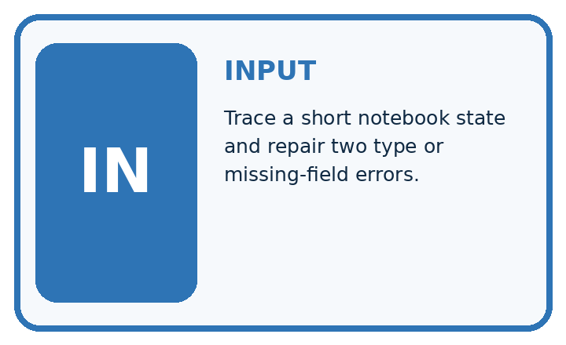
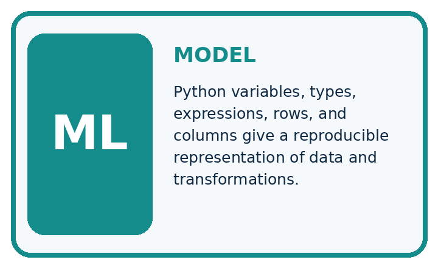
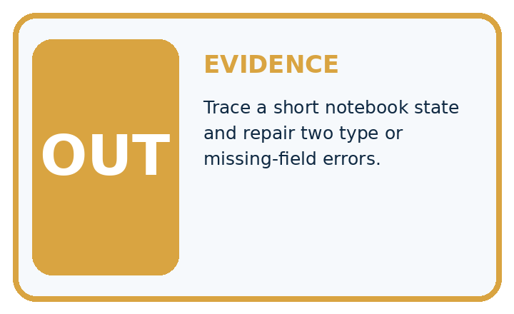
QUESTION Trace a short notebook state and repair two type or missing-field errors.
MODEL IDEA Python variables, types, expressions, rows, and columns give a reproducible representation of data and transformations.
PROOF NEEDED Use an unseen case, visible calculation, error analysis, and a stated limitation.
Draw a fresh data → model → prediction → evaluation trace:
A closer explanation
rows = [{"activity": "Reading", "minutes": 12},
{"activity": "Sorting", "minutes": 0}]
for row in rows:
valid = (type(row["activity"]) is str
and len(row["activity"]) > 0
and type(row["minutes"]) is int
and 0 <= row["minutes"] <= 60)
print(valid)Follow the evidence
The worked script prints True twice. type(value) is int checks the exact type here and avoids accepting a Boolean as a count. The chained comparison checks both boundaries. The example assumes both keys exist; next week handles missing fields. A zero duration is allowed by this written schema.
Check a row in separate steps
A schema is a checklist for what a row must contain. First ask whether the activity name is text and is not empty. Next ask whether minutes is an integer. Then ask whether that integer lies between 0 and 60, including both ends. Keep these checks separate when explaining a rejection. The number 12 and the text "12" look similar on a page, but only the number meets this lesson’s minutes rule.
Apply the connected idea: File input and output
with open("durations.txt", "r", encoding="utf-8") as handle:
lines = handle.read().splitlines()
values = []
for line in lines:
values.append(int(line))
print(sum(values))Follow the evidence
The mode r means read. with closes the file when the block finishes, including when an error occurs. splitlines separates lines without retaining newline characters. This example assumes each line is a valid integer text; an empty line or twelve raises ValueError during int conversion.
Separate file text from numbers
The file contains characters, not ready-made Python integers. Reading gives text; splitlines separates the lines; int converts each valid line into a number. The lines "12" and "8" become 12 and 8, so their total is 20. Keep those three stages visible in your trace. A line such as "twelve" fails conversion, and a missing file is a different problem. Neither failure means the observed duration was zero.
Apply the connected idea: Exceptions and recovery
def parse_minutes(text):
try:
value = int(text)
except ValueError:
return {"status": "invalid text", "value": None}
if value < 0 or value > 60:
return {"status": "out of range", "value": None}
return {"status": "ok", "value": value}
for text in ["12", "zero", "0", "61"]:
print(parse_minutes(text))Follow the evidence
try covers the operation expected to fail; except ValueError handles that known conversion failure. Returning early ends the failing path. This contract expects a string: it does not claim to handle every possible object. Spaces around an integer are accepted by int, and that behavior should be documented.
Give each failure an honest result
Trace the function as a decision path. First try to turn the text into an integer. If that conversion raises ValueError, return invalid text and None. If conversion succeeds, check the range. A value outside 0 through 60 returns out of range and None. Only a value passing both stages returns ok and its number. None means there is no accepted number; it must not be added to a duration total.
Connect the picture and the explanation
Point to the input, the deciding step and the result in this week’s visual. Explain the same step in ordinary words. A picture helps when you can say what each part represents.
Student lesson · 4 of 17
Compare the cases
EVALUATION DESIGN
Four Tests, Four Kinds of Evidence
A system is not understood until it survives more than one comfortable example.


NORMAL Expected data and expected behavior.
BOUNDARY Value close to a threshold, ambiguous label, or uncertain prediction.
MISSING Necessary field, label, source, or measurement is unavailable.
SHIFTED New lighting, species, device, subgroup, or time condition.
Which case most threatens today's claim, and why?
Change one thing in the pictured case
Change: S changes from 0 to None.
Prediction: Mean becomes (2+6)/2=4 cm with 2/4 measured.
Reason: Removing a measured zero changes both the denominator and the coverage.
Student lesson · 5 of 17
Words that unlock the idea
VOCABULARY
Words You Can Calculate and Defend
A definition matters when it lets you interpret a new dataset, model, or result.
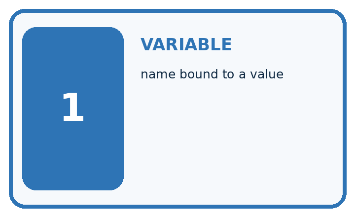
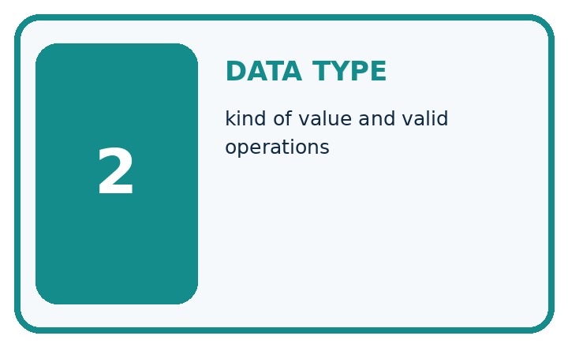
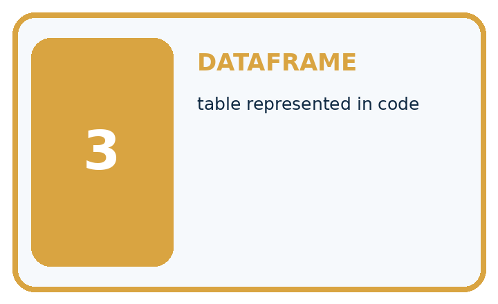
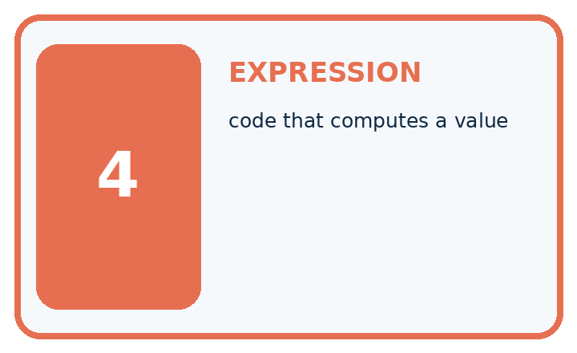
| Term | Precise meaning | My ML example |
|---|---|---|
| variable | name bound to a value | |
| data type | kind of value and valid operations | |
| dataframe | table represented in code | |
| expression | code that computes a value |
Repair the claim using a definition, calculation, or test record:
Words used in the closer explanation
| Word | Meaning |
|---|---|
| Schema | Rules for the fields and values in records |
| Type | A category such as integer or text |
| Unit | The quantity scale attached to a number |
| Constraint | A rule a valid record must satisfy |
Terms for File input and output
| Term | Meaning |
|---|---|
| File | Stored data with a name and location |
| Path | A location used to find a file |
| Encoding | A rule for representing text as bytes |
| Context manager | A with block that manages a resource such as closing a file |
Terms for Exceptions and recovery
| Term | Meaning |
|---|---|
| Exception | A signal that an operation could not complete normally |
| Handler | Code that responds to a specified exception |
| Recovery | A defined next step after a failure |
| Status | A label stating the outcome of a processing step |
Student lesson · 6 of 17
Follow a worked example
WORKED EVIDENCE
Reason Step by Step
Predict first. Then check each step. A correct answer without visible evidence cannot be audited.
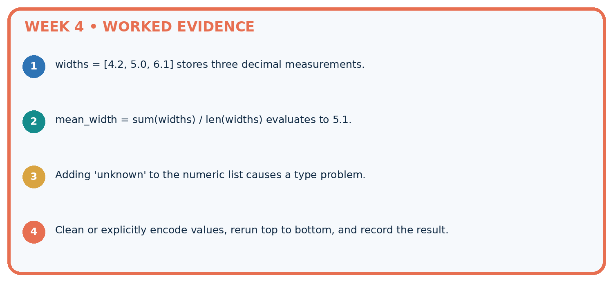
STEP 1 widths = [4.2, 5.0, 6.1] stores three decimal measurements.
STEP 2 mean_width = sum(widths) / len(widths) evaluates to 5.1.
STEP 3 Adding 'unknown' to the numeric list causes a type problem.
STEP 4 Clean or explicitly encode values, rerun top to bottom, and record the result.
Recalculate, retrace, or restate the evidence independently:
A closer explanation
Apply the connected idea: File input and output
Apply the connected idea: Exceptions and recovery
Learn from the worked case
Cover the result before checking it. Say what is given, choose the procedure, and follow one step at a time. Then uncover the result and explain your first mismatch. Ask why a step is allowed, not only what number it produces.
A pictorial worked case: Python and Table Readiness
Inspect a small table before asking Python to compute an average.
The facts we will use
Plant heights in cm: P=2, Q=6, R=None, S=0. None means unmeasured; zero is a recorded valid height.
All inputs and outcomes in this worked example are invented classroom data; no real model run is claimed.

Read the picture one step at a time
Why this result follows
Read the picture in order. Report 3/4 measured, retaining the missing record separately. The arrows show which recorded input or intermediate result each decision uses. Explain the deciding step aloud before checking the changed case; pointing to the final answer alone does not show how it follows.
What this example does not establish
The measured-row mean may not represent the missing plants; investigate why those readings are absent.
Read the labelled picture: Why should the missing value not silently become zero? Point to the relevant step in the picture, then write the changed result and the rule or evidence that supports it.
Change one thing: S changes from 0 to None. Predict the result before checking the explanation. What remains the same?
Student lesson · 7 of 17
Find and repair a mistake
ERROR DETECTIVE
Compare → Diagnose → Repair
Do not patch the answer. Find the earliest unsupported assumption, data problem, or experiment error.
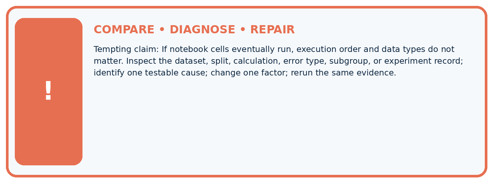
| Evidence record | Expected | Actual | Likely cause / next test |
|---|---|---|---|
| normal case | passes | ||
| boundary case | defined behavior | ||
| missing case | safe fallback | ||
| shifted case | measured limit |
Diagnose one cause and name the cleanest next experiment:
A closer explanation
A row can satisfy every schema rule and still be a wrong observation. Schema validation checks our stated structure and constraints, not whether someone measured honestly or selected a representative sample.
Apply the connected idea: File input and output
File reading does not establish that the values are valid durations. After conversion, apply the schema and record any rejected lines. Do not upload personal records to an external tool for this exercise.
Apply the connected idea: Exceptions and recovery
Recovery must fit the task. A caller may ask for corrected input or exclude the row with a recorded reason. It must not use None as a number or claim that rejected records were successfully processed.
Student lesson · 8 of 17
Practise together
ML STUDIO
Specify Before You Run
A trustworthy result can be reproduced from the recorded data, code, settings, and evaluation rule.

Experiment record
QUESTION + intended use + success threshold
DATA version + grouped split + leakage check
CODE/preprocessing + features + model + settings + seed
METRICS + positive class + units + denominators
PREDICTIONS + errors + subgroup slices + limitations
HUMAN reviewer + release, revise, limit, or stop decision
Write the minimum record needed to reproduce today's result:
A closer explanation
If one row records 120 seconds in the minutes field, a simple numeric total becomes misleading. Correct the source or explicitly convert and document it; renaming a column alone does not convert values.
Apply the connected idea: File input and output
If Python cannot find durations.txt, it raises FileNotFoundError. Check the current working folder and exact filename. Do not switch to write mode to solve a missing input: opening an existing file with w would replace its contents.
Apply the connected idea: Exceptions and recovery
A bare except that returns 0 hides unrelated programming errors and corrupts missing values. Catch the expected exception, preserve an error status and keep the unknown value as None. If file reading is added, handle FileNotFoundError separately with an actionable message.
Practise with less help: Classify records
Use workbook W2 for the connected example “Rows columns and schemas”. First fill the input and rule boxes. Try the middle steps before asking for a hint. After a hint, try the next step yourself.
| Plan | Do | Check |
|---|---|---|
| What is given? Which rule or procedure applies? | Record each intermediate step. | Does the result follow? What remains unknown? |
Explain your trace to a partner. Your partner points to one step to check. Swap roles on the next case. Each person writes their own explanation.
Check your reasoning
Use the worked case for Rows columns and schemas. Proposed explanation: “A successful run proves the conclusion”. Decide whether this explanation is supported. Point to the step or supplied fact that decides; explain your repair if needed.
Answer on your own before discussion. If you are unsure, say which step you need help with.
Practise the connected topic: File input and output
Use its named workbook W2. Identify the given inputs, try the middle steps with less help, then explain your trace. Check this claim before group discussion: A successful run proves the conclusion
Practise the connected topic: Exceptions and recovery
Use its named workbook W2. Identify the given inputs, try the middle steps with less help, then explain your trace. Check this claim before group discussion: A successful run proves the conclusion
Explain the picture
Why should the missing value not silently become zero? Point to the relevant step in the picture, then write the changed result and the rule or evidence that supports it.
This is supported practice. Keep the separately named independent case for an attempt before feedback.
Student lesson · 9 of 17
Run the investigation
EVIDENCE LAB
Predict → Run → Calculate → Interpret
Keep the test conditions fixed, record every result, and change only one planned factor.
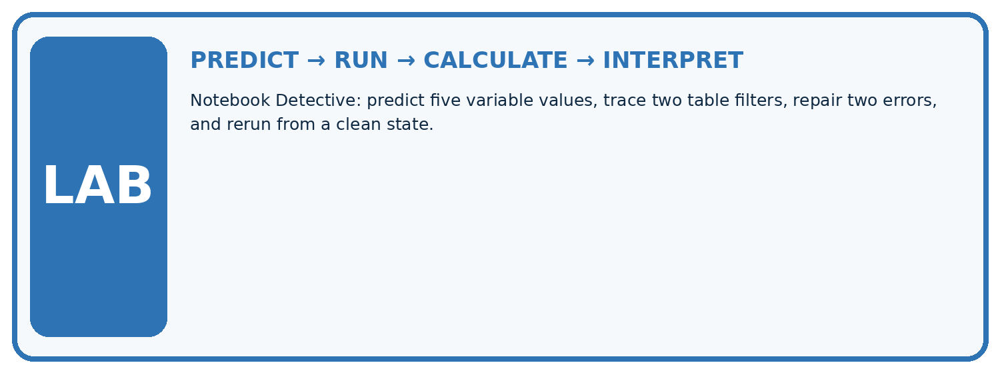
1. Write the hypothesis and expected evidence before running.
2. Notebook Detective: predict five variable values, trace two table filters, repair two errors, and rerun from a clean state.
3. Run one normal, one boundary, one missing, and one shifted case.
4. Calculate the metric from raw counts or row-level errors.
5. Interpret what changed, what did not, and what remains unsafe or unknown.
| Case | Prediction | Actual | Calculation / evidence | Meaning / next test |
|---|---|---|---|---|
| Normal | ||||
| Boundary | ||||
| Missing | ||||
| Shifted |
Plan → try → check
Before trying: what do I expect, and why? While trying: which step could first go wrong? Afterwards: what did I actually observe, and what should change? Keep “not run” if you only traced the procedure.
Student lesson · 10 of 17
Build your understanding
MASTERY
From Knowing the Word to Owning the Idea
Move upward only when you can produce evidence without copying the example.

DEFINE Use all four terms precisely: variable, data type, dataframe, expression.
CALCULATE Reproduce the worked evidence with units and denominator.
TRACE Explain the data, code or decision path.
DIAGNOSE If notebook cells eventually run, execution order and data types do not matter.
TRANSFER Solve a fresh dataset or model case.
IMPROVE Change one cause and rerun fixed evidence.
DEFEND State intended use, metric, limitation, and human responsibility.
Student lesson · 11 of 17
Connect your project
CUMULATIVE PROJECT
Responsible Plant Classifier
Every week adds one reviewable artifact to the same evidence-based capstone.
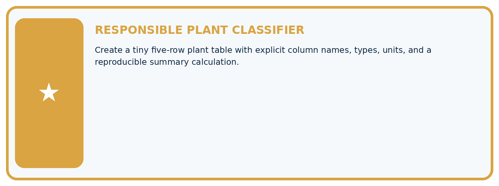
Which requirement or risk does this artifact address?
Which dataset, split, code, and metric version does it use?
What normal and shifted cases were tested?
What remains uncertain or weak?
What decision still belongs to a teacher or qualified human?
My evidence-linked project decision:
Evidence for your project
For your Responsible Plant Classifier, save the input, procedure, observed result and limitation of this check. Label this worked example as practice; use a different, previously unreviewed case when checking independent understanding.
Student lesson · 12 of 17
Show what you know
INDEPENDENT PROOF
Explain • Calculate • Transfer • Defend
Complete this with a fresh case after guided practice and compare it with the mastery criteria.
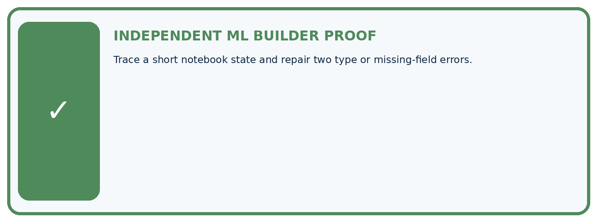
□ Define the task, feature/target roles, and intended-use boundary.
□ Show the calculation, code trace, or experiment record.
□ Test a normal case and one revealing boundary, missing, or shifted case.
□ Diagnose one failure without changing several factors at once.
□ Name a limitation, fairness concern, and the human-review action.
Independent evidence and defense:
My level: □ Not yet □ With one hint □ Independently □ I can teach and defend it
Student lesson · 13 of 17
Study a complete case
Week 4 Worked case
Use the supplied details to practise the weekly concept before attempting the independent question. This case extends the illustrated lesson.
The situation
Python lengths=[4,6,8]; total=sum(lengths); mean=total/len(lengths).
The question
Trace and handle an empty list.
Worked explanation
Total=18, count=3, mean=6.0. Guard the empty case against division by zero; no mean exists without observations.
Explain it in your own words
Which detail supports the answer, and why does it matter?
Trace the supplied case visually
Trace the calculation and its empty case
| Evidence or stage | Value or result |
|---|---|
| lengths | [4,6,8] |
| sum | 18 |
| count | 3 |
| mean | 6.0 |
| empty list | No mean, guard division by zero |
Python lengths=[4,6,8]; total=sum(lengths); mean=total/len(lengths).
Trace and handle an empty list.
Total=18, count=3, mean=6.0. Guard the empty case against division by zero; no mean exists without observations.
Student lesson · 14 of 17
Try a new case independently
Independent case: Changed independent case
Supplied values are3,7,14. Compute their mean. What should a function report for an empty list? How should it handle a missing fourth record?
Attempt this case before feedback. Record any help. Earlier examples below are further practice; a case already practised with feedback cannot establish fresh transfer.
Week 4 Independent application
Close the worked explanation. Apply the idea to this different question without copying.
Trace Python: lengths = [4, 7, 9]; selected = lengths[1]; total = selected + 3. Give selected and total.
My answer, with a trace, calculation or supporting evidence
Create and test
Change one relevant detail. Predict the result before testing. Include a boundary or missing-information case when it helps reveal a limit.
My changed input and expected result
Connect to your project
Create a tiny five-row plant table with explicit column names, types, units, and a reproducible summary calculation.
The evidence I will keep
Your teacher has the independent answer and scoring criteria. Complete the matching workbook week to keep your practice evidence together.
Transfer practice from the original programme
Trace mean for [4,8,12] using sum(values)/len(values). What should the program do for []? Explain why returning 0 silently is misleading.
Use feedback to improve
Attempt the independent case before hints. Record whether you worked alone, used a hint or followed a model. After feedback, fix the first unsupported step and explain why it changed. A later check uses a changed case, not a copied answer.
Student lesson · 15 of 17
Your lesson route
Start with this question: Inspect a small table before asking Python to compute an average.
| By the end, I can | How I will show it |
|---|---|
| Specify a table schema | Explain the deciding step, show a trace or test, and state one limit. |
| Check types and units as well as names | Explain the deciding step, show a trace or test, and state one limit. |
| Distinguish structural validity from truth | Explain the deciding step, show a trace or test, and state one limit. |
Remember → watch and explain → try with help → investigate → try independently → keep project evidence. Your teacher may spread this lesson across several classes.
Keep your first prediction. Compare it with what the evidence shows and explain any change.
Student lesson · 16 of 17
Finish and return
Close your notes. Explain this goal in your own words: Specify a table schema
If you are unsure, return to the worked picture and explain one arrow. If you are ready, change an input or assumption and justify your prediction.
Save your workbook evidence. At the next review, try a different case before opening your old answer.
Student lesson · 17 of 17
Supported practice, repair and portfolio
Use this supported practice once, in the browser or on paper. Keep the reserved independent assessment for a separate first attempt before teacher feedback.
Inspect a small table before asking Python to compute an average.
Practice 1: explain the deciding evidence
Which labelled step matches this detail? Report 3/4 measured, retaining the missing record separately.
1. Check records
2. Report coverage
3. Calculate mean
Hint if needed: Read the steps in the pictorial case. Match the supplied detail to the stage that performs or records it.
After your attempt, compare with the supported explanation: Report coverage Report 3/4 measured, retaining the missing record separately. Read the picture in order. Report 3/4 measured, retaining the missing record separately. The arrows show which recorded input or intermediate result each decision uses. Explain the deciding step aloud before checking the changed case; pointing to the final answer alone does not show how it follows.
Practice 2: explain the deciding evidence
Changed-case practice: S changes from 0 to None. Which conclusion is supported by the supplied facts?
1. This one example guarantees correct results for every future input.
2. We can decide the result without examining the changed input or the procedure.
3. Mean becomes (2+6)/2=4 cm with 2/4 measured.
Hint if needed: Use the changed condition and the deciding step in the pictorial trace. The answer must say what follows from those facts.
After your attempt, compare with the supported explanation: Mean becomes (2+6)/2=4 cm with 2/4 measured. Removing a measured zero changes both the denominator and the coverage.
Repair a missing building block
Review Classification or Regression? (ai-4/3). Goal: Identify a task from the meaning of its target. Short practice: Did regression MAE improve when the boundary changed? Point to the relevant step in the picture, then write the changed result and the rule or evidence that supports it.. Return to this week and explain what you changed.
Review The ML Lifecycle (ai-4/1). Goal: Distinguish fitting a rule from applying a fixed rule. Short practice: Should the team silently retune on the changed test? Point to the relevant step in the picture, then write the changed result and the rule or evidence that supports it.. Return to this week and explain what you changed.
Predict, run and debug
The browser lab lets you edit the supported Python examples already included in this lesson. Predict first, run, inspect the actual output or error, change one input, then run again. Keep code, predictions, actual results and a reasoned revision together. On paper, label your result as a trace rather than an execution.
Keep your completed work
Use Download completed work in the hosted lesson to export your answers, reflections, practice feedback and code-run evidence. Open the HTML copy to read or print it. Drafts stay in this browser when storage is available; clear drafts on a shared device.